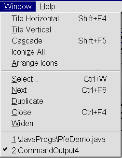
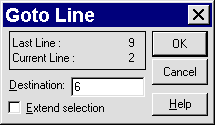

Correcting the Errors
The CommandOutput window indicates the
line number where the errors were first noticed. The PfeDemo
window can be activated using the Window menu Tile
or Cascade options or selecting one of the windows
listed at the bottom of the menu can be selected.

The line containing the error, in a large file,
can be located by using the Edit menu Goto Line …
option.

The correction can be accomplished by inserting
the missing closing quotes and the corrected file saved by
pressing the Save button on the tool bar.